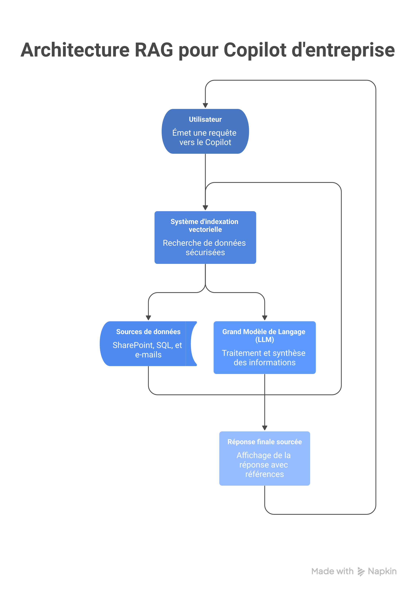
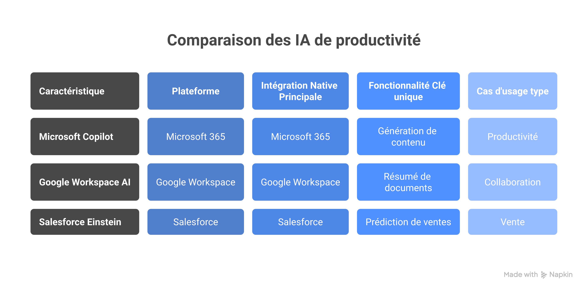
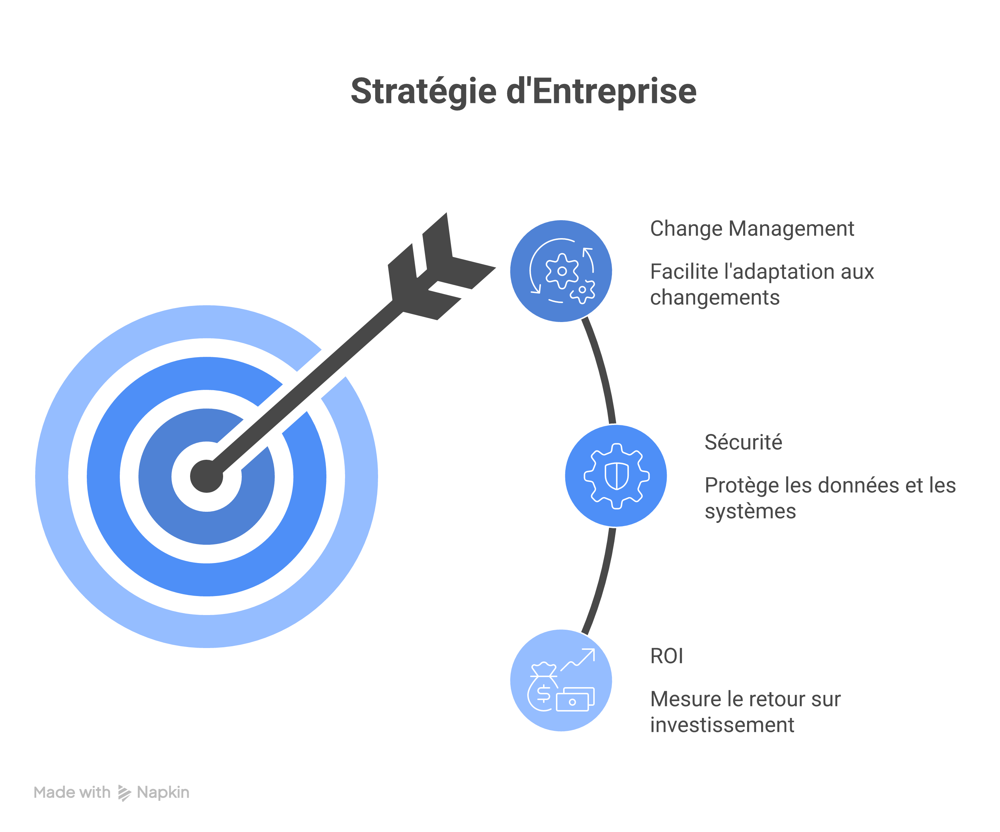

L'Urgence de l'Augmentation : Pourquoi le Copilot d'Entreprise est Inévitable
La friction numérique tue la productivité. Aujourd'hui, un employé de bureau passe en moyenne plus de 25% de sa journée à rechercher des informations, synthétiser des e-mails ou reformater des données. Ce n'est pas du travail cognitif, c'est de la logistique mentale. C'est précisément ici qu'intervient le concept de Copilot d'entreprise.
Contrairement aux IA génératives grand public, un Copilot d'entreprise est une intelligence artificielle intégrée nativement dans vos outils de travail (CRM, ERP, suite bureautique) et, crucialement, ancrée (grounded) dans vos propres données sécurisées. Ce n'est pas un gadget pour rédiger des poèmes ; c'est un moteur d'exécution contextuel.
Les chiffres sont sans équivoque : selon une étude de Stanford Digital Economy Lab, les entreprises déployant l'IA générative de manière stratégique observent un retour sur investissement (ROI) moyen en moins de 6 mois. L'adoption n'est plus une option, mais une course : le cabinet Gartner projette que 40% des entreprises B2B auront adopté l'IA générative d'ici 2026. Attendre, c'est accepter une décote de productivité structurelle face à la concurrence.
Fonctionnement et RAG : Comment le Copilot d'Entreprise s'approprie vos Données
Pour comprendre comment obtenir ces gains de productivité, il faut soulever le capot. Un Copilot d'entreprise n'est pas simplement un Grand Modèle de Langage (LLM) comme GPT-4 ou Gemini posé sur un chat. C'est une architecture complexe, souvent basée sur des services comme Azure OpenAI, qui fait le pont entre la puissance linguistique de l'IA et la spécificité de vos données d'affaires.
Le fonctionnement repose sur une chaîne de traitement précise :
- 1. Saisie utilisateur : La requête est formulée en langage naturel (ex: "Résume les risques du projet X basés sur les derniers comptes-rendus de réunion").
- 2. Traitement du langage naturel (NLP) : Le Copilot analyse l'intent et le contexte de l'utilisateur.
- 3. Accès aux connaissances : L'IA ne répond plus de mémoire ; elle s'appuie sur une technique appelée RAG (Retrieval-Augmented Generation). Elle va chercher (retrieve) les informations pertinentes dans vos bases de données sécurisées (SharePoint, Salesforce, bases SQL) via des API sécurisées.
- 4. Génération de réponse : Le LLM combine sa capacité linguistique avec les données fraîches récupérées pour générer une réponse précise, contextuelle et sourcée.
- 5. Interaction utilisateur : L'utilisateur valide ou affine la réponse.

Schéma technique détaillé de l'architecture RAG (Retrieval-Augmented Generation) pour un Copilot d'entreprise. Montre le flux bidirectionnel entre l'utilisateur (requête), un système d'indexation vectorielle (recherche de données sécurisées SharePoint, SQL, e-mails), le Grand Modèle de Langage (LLM), et la génération de la réponse finale sourcée. Style diagramme d'architecture moderne, palette de bleu et gris.
Panorama des Solutions : Microsoft Copilot vs Google Workspace AI vs Salesforce Einstein
Le marché est dominé par les géants de l'écosystème logiciel B2B. Le choix de votre Copilot dépendra avant tout de votre infrastructure existante.
Microsoft Copilot : Le Leader de l'Intégration
Sans surprise, Microsoft domine le marché en intégrant nativement son Copilot dans Microsoft 365 (Word, Excel, PowerPoint, Outlook, Teams). Sa force réside dans sa capacité à lier des données transversales (un e-mail Outlook, un document Word, une conversation Teams) pour exécuter des tâches complexes.
Google Workspace AI (Gemini) : L'Alternative Cloud-Native
Concurrent direct de Microsoft, Gemini s'intègre dans Docs, Sheets, Slides, Gmail et Meet. Il excelle dans la génération rapide de contenu et la synthèse, tirant parti de la fluidité de l'écosystème Google.
Salesforce Einstein : L'IA Verticale Métier
Ici, l'IA se spécialise verticalement. Einstein automatise les tâches de vente (rédaction d'e-mails de prospection, scoring de leads) et de marketing en se basant sur les données du CRM. C'est un Copilot de processus métier plutôt que de productivité bureautique générale.

Tableau comparatif moderne et épuré comparant Microsoft Copilot, Google Workspace AI, et Salesforce Einstein. Colonnes : Plateforme, Intégration Native Principale, Fonctionnalité Clé unique, Cas d'usage type (Vente, Productivité, Collaboration). Style infographie d'entreprise propre.
Microsoft Copilot vs Google Gemini : Tableau Comparatif B2B
Le choix se fait moins sur les fonctionnalités, souvent similaires (synthèse, rédaction, analyse), que sur l'écosystème de données et la maturité de la gouvernance.
| Critère | Microsoft Copilot for Microsoft 365 | Google Workspace AI (Gemini) |
|---|---|---|
| Ancrage de Données | Fort (Microsoft Graph : e-mails, fichiers, chats) | Fort (Google Drive, Gmail, Meet) |
| Points Forts | Analyse Excel complexe, création de présentations PPT à partir d'un Word, synthèse de réunions Teams. | Rédaction de courriels, résumés de documents longs, traduction en temps réel dans Meet. |
| Complexité de déploiement | Moyenne à Élevée (nécessite une gouvernance de données stricte sur SharePoint/OneDrive). | Moyenne (plus simple si l'entreprise est déjà 100% Cloud Google). |
Le Guide de Déploiement : 5 Étapes pour Atteindre les +30% de Productivité
Déployer un Copilot n'est pas une simple installation logicielle ; c'est une compétence qu'on infuse. Un déploiement raté conduit à une IA qui hallucine sur des données obsolètes ou, pire, qui expose des données sensibles.
Voici la feuille de route pour un déploiement stratégique :
Étape 1 : Nettoyage et Gouvernance des Données (La base de tout)
Si vos données sont désorganisées (duplicates, permissions mal gérées), votre Copilot sera inefficace ou dangereux. Vous devez auditer vos permissions d'accès avant tout déploiement. L'IA respectera les permissions existantes : si un employé n'a pas accès au dossier RH, son Copilot ne le lira pas non plus. Mais encore faut-il que ce dossier soit correctement protégé. Babylone 42 vous accompagne dans l'intégration sécurisée de Copilot pour assurer cette étanchéité.
Étape 2 : Identification des Cas d'Usage (Ne faites pas tout, tout de suite)
Concentrez-vous d'abord sur les services où la friction numérique est la plus élevée. Les études McKinsey montrent qu'une majorité d'employés (**61%**) se disent prêts à utiliser l'IA générative pour automatiser des tâches répétitives. Commencez par là : synthèse de comptes-rendus, rédaction d'e-mails types, analyse de tableaux Excel.
Étape 3 : Formation et Change Management (L'adoption fait le ROI)
Utiliser un Copilot demande d'apprendre l'art du "prompting". Les employés doivent comprendre comment interroger l'IA pour obtenir le meilleur résultat et, surtout, comment **exercer un esprit critique** sur les réponses générées. L'IA est un assistant responsable, pas un remplaçant. Découvrez notre formation IA générative B2B pour accélérer cette montée en compétence.
Étape 4 : Mesurez et Ajustez (Le ROI réel)
Déployez sur un groupe test. Mesurez le temps gagné sur des tâches spécifiques (ex: temps passé à rédiger des propositions commerciales avant/après Copilot). C'est ce qui vous permettra de valider le potentiel d'augmentation de productivité de 30% avant l'extension, un chiffre corroboré par les premiers retours d'expérience clients de Microsoft.
Étape 5 : Passage à l'Échelle
Une fois les processus validés et la gouvernance sécurisée, étendez le déploiement à l'ensemble de l'organisation.
Les Freins et Risques : Ce que les Décideurs B2B Doivent Savoir
Cependant, l'enthousiasme ne doit pas masquer les défis réels de l'IA en B2B.
- Coût : Les licences Copilot (souvent autour de 30$/utilisateur/mois) représentent un investissement significatif. Le ROI doit être calculé précisément en face pour justifier l'adoption.
- Sécurité et Confidentialité des Données : C'est la préoccupation n°1. Les décideurs doivent obtenir la garantie que leurs données ne servent pas à entraîner les modèles publics de l'IA (ce qui est garanti par les solutions Enterprise comme Microsoft Copilot ou Gemini Business).
- Éthique et Biais : L'utilisation de l'IA impose une réflexion sur la responsabilité des décisions qu'elle assiste, ainsi que sur l'identification et la correction des biais présents dans les données d'entraînement.

Photographie de style corporate, montrant un CIO (homme) et une COO (femme) discutant de manière réfléchie mais confiante devant un tableau blanc moderne où sont écrits : 'ROI : Étape 4', 'Sécurité : Priorité N°1', et 'Change Management'. Bureau moderne, éclairage naturel.
Technique permettant à une IA d'aller chercher des informations fraîches et vérifiées dans les bases de données de l'entreprise avant de générer une réponse. Cela garantit que l'IA ne 'parle pas de mémoire' mais se base sur vos faits.
Processus de connexion d'un LLM à des sources de données réelles et spécifiques (fichiers, e-mails, CRM). L'ancrage permet à l'IA de comprendre le contexte de votre entreprise.